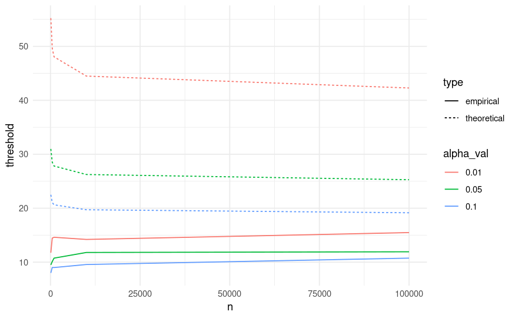
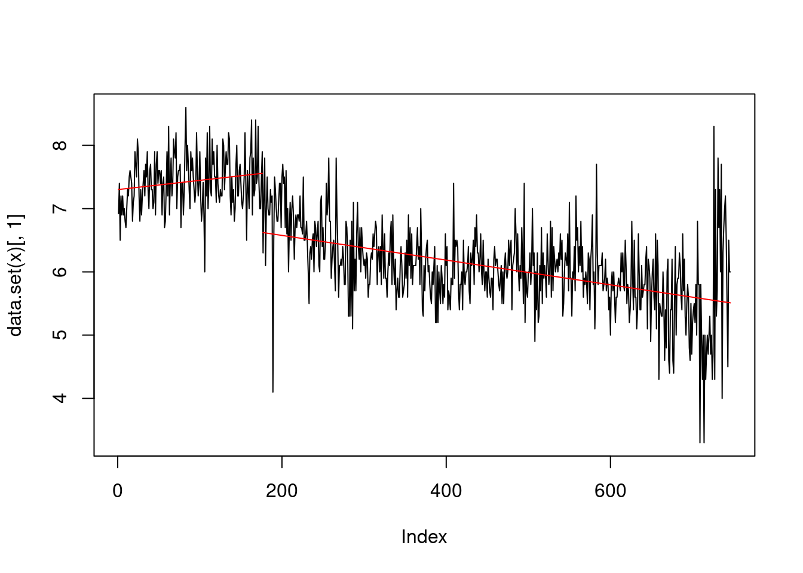

2 Controlling the CUSUM and Other Models
In this chapter, we explore the properties of the CUSUM test for detecting a change in mean, and this will allow us how to determine appropriate thresholds, and explore its properties when a changepoint is present.
We will employ some concepts from asymptotic theory: in time series analysis, an asymptotic distribution refers to the distribution that our test statistic approaches as the length of the time series \(n\) becomes very large.
2.1 The asymptotic distribution of the CUSUM statistics
We have learned that the chi-squared distribution is a continuous probability distribution that models the sum of squares of k independent standard normal random variables. More formally, if \(z_1, \cdots, z_k\) are independent, standard Normal random variables, then:
\[ \sum_{i=1}^k z^2_i \sim \chi^2_k \]
We have met this distribution already in hypothesis testing and constructing confidence intervals. The shape of the distribution depends on its degrees of freedom (k). For \(k=1\), it’s highly skewed, but as k increases, it becomes more symmetric and approaches a normal distribution.
We learned that, when properly normalized \(C_\tau\) follows a standard normal distribution under the null hypothesis of no change. Therefore, our test statistics for a fixed \(\tau\), \(C_\tau^2/\sigma^2\), follows a chi-squared distribution with 1 degree of freedom, being the square of a standard random variable. If we take the example of last week, and remove the changepoint, we can observe that the cusum statistics stays constant, and relatively small:
However, as the change is unknown, our actual test statistic for detecting a change is \(\max_\tau C_\tau^2/σ^2\).
For this reason, calculating the distribution of this maximum ends up being a bit more challenging…
- So far, we worked only for one fixed \(\tau\), however, when comparing the maximums, the values of \(C_\tau\) are in fact not independent across different \(\tau\)s.
- As we will learn later, the CUSUM is a special case of a LR test, as setting the size of the actual change in mean to 0 effectively removes the changepoint parameter from the model. For this reason, the usual regularity conditions for likelihood-ratio test statistics don’t apply here.
2.1.1 Controlling the max of our cusums
Fortunately, for controlling our CUSUM test, we can use the fact that \((C_1, ..., C_{n-1})/ \sigma\) are the absolute values of a Gaussian process with mean 0 and known covariance, and there are well known statistical results that can help us in our problem. Yao and Davis (1986), in fact, show that the maximum of a set of Gaussian random variables is known to converge to a Gumbel distribution, described by the following equation:
\[ \lim_{n→\infty} \text{Pr}\{a_n^{-1}(\max_\tau C_\tau/\sigma - b_n) ≤ u_\alpha\} = \exp\{-2π^{-1/2}\exp(-u_\alpha)\}, \]
where \(a_n = (2 \log \log n)^{-1/2}\) and \(b_n = a_n^{-1} + 0.5a_n \log \log \log n\) are a scaling and a centering constant.
The right side of this equation is the CDF of a Gumbell distribution. As we learned from likelihood inference, to find the threshold \(c_{\alpha}\) for a given false probability rate, we first set the right-hand side equal to \(1 - \alpha\), and solve for \(u_\alpha\). This gives:
\[ u_\alpha = -\log\left( -\frac{\log(1-\alpha)}{2\pi^{-1/2}} \right). \]
Then, we can find the critical value by looking into the left side of the equation:
\[ \tilde{c} = (a_n u_\alpha + b_n), \]
To find the threshold, as \(\max_\tau \frac{C_{\tau}^2 }{\sigma^2} > c\), we just have to square our value above, e.g. \(c_\alpha = \tilde{c}^2\).
This asymptotic result suggests that the threshold \(c_\alpha\) for \(C_τ^2/σ^2\) should increase with \(n\) at a rate of approximately \(2 \log \log n\). Given that this is a fairly slow rate of convergence, this suggests that the threshold suggested by this asymptotic distribution can be conservative in practice, potentially leading to detect less changepoints than what actually exist.
In practice, it’s often simplest and most effective to use Monte Carlo methods to approximate the null distribution of the test statistic. This approach involves simulating many time series under the null hypothesis (no changepoint) and calculating the test statistic for each. The distribution of these simulated test statistics can then be used to set appropriate thresholds. This, as we will see, it’s much better as it ends up having less conservative thresholds:

We will see how to obtain this thresholds in the Lab.
2.2 The Likelihood Ratio Test
The CUSUM can be viewed as a special case of a more general framework based on the Likelihood Ratio Test (LRT). This allow us to test for more general settings, beyond simply detecting changes in the mean.
In general, the Likelihood Ratio Test is a method for comparing two nested models: one under the null hypothesis, which assumes no changepoint, and one under the alternative hypothesis, which assumes a changepoint exists at some unknown position \(\tau\).
Suppose we have a set of observations \(x_1, x_2, \dots, x_n\). Under the null hypothesis \(H_0\), we assume that all the data is generated by the same model without a changepoint. Under the alternative hypothesis \(H_1\), there is a single changepoint at \(\tau\), such that the model for the data changes after \(\tau\). The LRT statistic is given by:
\[ LR_\tau = - 2 \log \left\{ \frac{\max_{\theta} \prod_{t=1}^n L(y_{t}| \theta)}{\max_{\theta_1, \theta_2} [(\prod_{t=1}^n L(y_{t}| \theta_1))(\prod_{t=1}^n L(y_{t}| \theta_2)]} \right\} \]{eq-lr-test}
The LRT compares the likelihood of the data under two models to determine which one is more likely: the enumerator, is the likelihood under the null hypothesis of no changepoint, while the denominator represents the likelihood of the data under the alternative hypothesis, where we optimise for two different parameters before and after the changepoint at \(\tau\).
2.2.1 Example: Gaussian change-in-mean
The CUSUM statistics, in fact, is nothing but a specific case of this model. To see this, we start from our piecewise costant signal, plus noise, \(x_i = f_i + \epsilon_i, \quad i = 1, \dots, n\). Under this model our data, a linear combination of a Gaussian, is distributed as:
\[ y_{i} \sim N(\mu_i, \sigma^2), \quad i = 1, \dots, n \] Therefore, to obtain the likelihood ratio test statistic, we plug our Gaussian kernel into the LR above, and take the logarithm:
\[ LR_\tau = -2 \left[ \max_{\mu} \left( -\frac{1}{2\sigma^2} \sum_{i=1}^n (y_i - \mu)^2 \right) - \max_{\mu_1, \mu_2} \left( -\frac{1}{2\sigma^2} \left( \sum_{i=1}^\tau (y_i - \mu_1)^2 + \sum_{i=\tau+1}^n (y_i - \mu_2)^2 \right) \right) \right] \]
This simplifies to:
\[ = \frac{1}{\sigma^2} \left[ \min_{\mu} \sum_{i=1}^n (y_i - \mu_1)^2 - \min_{\mu_1, \mu_2} \left( \sum_{i=1}^\tau (y_i - \mu_1)^2 + \sum_{i=\tau+1}^n (y_i - \mu_2)^2 \right) \right] \]
To solve the minimization over \(\mu_1\) and \(\mu_2\), we plug-in values \(\hat\mu = \bar{y}_{1:n}\) on the first term, and \(\hat\mu_1 = \bar{y}_{1:\tau}\), \(\hat\mu_2 = \bar{y}_{(\tau+1):n}\) for the second term:
\[ LR_\tau = \frac{1}{\sigma^2} \left[ \sum_{i=1}^n (y_i - \bar{y}_{1:n})^2 - \sum_{i=1}^\tau (y_i - \bar{y}_{1:\tau})^2 - \sum_{i=\tau+1}^n (y_i - \bar{y}_{(\tau+1):n})^2 \right] \]
This is the likelihood ratio test statistic for a change in mean in a Gaussian model, which is essentially the CUSUM statistics squared, rescaled by the known variance:
\[ LR_\tau = \frac{C_\tau^2}{\sigma^2} \]
This is possible to prove directly after some tedious algebraic manipulations (which we will see in the workshop!).
2.3 Towards More General Models
The great thing of the LR test is that it’s extremely flexible, allowing us to detect other changes then the simple change-in-mean case. As before, the procedure is to compute the LR test conditional on a fixed location of a changepoint, e.g. \(LR_\tau\), and range across all possible values for \(\tau\) to find the test statistics for our change.
2.3.1 Change-in-variance
To this end we will demostrate how to construct a test for Gaussian change-in-variance, for mean known. For simplicy, we will call our variance \(\sigma^2 = \theta\), our parameter of interest, and without loss of generality, we can center our data on zero (e.g. if \(x_t \sim N(\mu, \theta)\), then \(x_t - \mu = y_t \sim N(0, \theta)\)). Then, our p.d.f for one observation will be given by:
\[ L(y_t | \theta) = \frac{1}{\theta \sqrt{2\pi}} \exp\{-\frac{y_t}{2 \theta}\}. \] Plugging in the main LR test formula, we find:
\[ LR_\tau = - 2 \log \left\{ \frac{\max_{\theta} \prod_{t=1}^n \frac{1}{\theta \sqrt{2\pi}} \exp\{-\frac{y_t}{2 \theta}\}}{\max_{\theta_1, \theta_2} [(\prod_{t=1}^\tau \frac{1}{\theta \sqrt{2\pi}} \exp\{-\frac{y_t}{2 \theta}\})(\prod_{t=\tau+1}^n \frac{1}{\theta \sqrt{2\pi}} \exp\{-\frac{y_t}{2 \theta}\}]} \right\} \]
And taking the log, and simplifying over the constant gives us:
\[ \min_\theta \sum_{t = 1}^n \left( \log(\theta) + \frac{y^2}{\theta} \right) - \min_{\theta_1, \theta_2} \left[ \ \sum_{t = 1}^\tau \left( \log(\theta_1) + \frac{y^2}{\theta_1} \right) + \sum_{t = \tau+1}^n \left( \log(\theta_2) + \frac{y^2}{\theta_2} \right) \right] \]
Now to solve the minimisation, we focus on the first term: \[ f(y_{1:n}, \theta) = \sum_{t = 1}^n \left( - \log(\theta) - \frac{y^2}{\theta} \right) \] Simplifying the sum: \[ = \left( - n \log(\theta) - \frac{\sum_{t = 1}^n y^2}{\theta} \right). \]
Taking the derivative with respect to \(\theta\), gives:
\[ \frac{d}{d\theta} f(y_{1:n}, \theta) = -\frac{n}{\theta} + \frac{\sum_{t = 1}^n y^2}{\theta^2} \] Setting equal to zero and solving for \(\theta\): \[ -n \theta + \sum_{t = 1}^n y^2 = 0 \] Which gives us: \(\hat\theta = \frac{\sum_{t = 1}^n y^2}{n} = \bar S_{1:n}\) the sample variance.
Solving the optimization for \(\theta_1\) and \(\theta_2\) similarly, and plugging in the values \(\hat \theta_1 = \bar S_{1:\tau}, \ \hat \theta_2 = \bar S_{(\tau+1):n}\), gives us the final LR test:
\[ LR_\tau = \left[ - n \log(\bar S_{1:n}) + \tau \log(\bar S_{1:\tau}) + (n - \tau) \log(\bar S_{(\tau + 1):n}) \right]. \]
2.3.2 Change-in-slope
Another important exaple, and an alternative to detecting a change-in-mean, is detecting a change in slope. In this section, we assume the data is still modeled as a signal plus noise, but the signal itself is a linear function of time (e.g. non-stationary, with a change!). Graphically:
More formally, let our data be modeled as:
\[ y_t = f_t + \epsilon_t, \quad t = 1, \dots, n, \]
where the noise vector \(\epsilon_{1:n} \sim N(0, 1)\) consists of independent and identically distributed (i.i.d.) normal random variables. In this scenario, for simplicity, we assume a known constant variance, which without loss of generality, we take to be 1.
Under the null hypothesis \(H_0\), we assume that the signal is linear with a constant slope over the entire sequence, i.e.,
\[ f_t = \theta_0 + t\theta_1, \quad t = 1, \dots, n, \]
where \(\theta_0\) is the intercept, and \(\theta_1\) is the slope. However, under the alternative hypothesis \(H_1\), we assume there is a changepoint at \(\tau\) after which the slope changes. Thus, the signal becomes:
\[ f_t = \theta_0 + t\theta_1, \quad t = 1, \dots, \tau; \quad f_t = \theta_0 + \tau \theta_1 + (t-\tau)\theta_2, \quad t = \tau+1, \dots, n, \]
where \(\theta_2\) is the new slope after the changepoint. In other words, the model is showing a continuoos piecewise linear mean.
For this model, the log-likelihood ratio test statistic can be written as the square of a projection of the data onto a vector \(v_\tau\), i.e.,
\[ LR_\tau = \left( v_\tau^\top y_{1:n} \right)^2, \]
where \(v_\tau\) is a contrast vector that is piecewise linear with a change in slope at \(\tau\). This vector is constructed such that, under the null hypothesis, the vector \(v_\tau^\top y_{1:n}\) has variance 1, and $ v_^y_{1:n}$ is invariant to adding a linear function to the data. These properties uniquely define the contrast vector \(v_\tau\), up to an arbitrary sign. Computations on how to obtain this likelihood ration test, and how to construct this vector are beyond the scope of this module, but should you be curious those are detailed in Baranowski, Chen, and Fryzlewicz (2019).
2.3.3 Revisiting our Simpsons data (again!)
So, going back to the Simpsons example… We mentioned how the belowed show rose rapidly to success, and at one point, started to decline… A much better model would therefore be our change-in-slope model!
To run the model, we can take advantage of the not package, which by default is a multiple changepoint algorithm (we will see these in the next week), but whose simplest case implements exactly our change-in-slope LR test.
Before we proceed, we need to load, clean and standardize our data:
# Load Simpsons ratings data
simpsons_episodes <- read.csv("extra/simpsons_episodes.csv")
simpsons_episodes <- simpsons_episodes |>
mutate(Episode = id + 1, Season = as.factor(season), Rating = tmdb_rating)
simpsons_episodes <- simpsons_episodes[-nrow(simpsons_episodes), ]
y <- simpsons_episodes$RatingWe can then run our model with:
library(not)
r <- not(y, method = "max", rand.intervals = FALSE, contrast = "pcwsLinContMean", intervals = random.intervals(n, 1, min.length = (n-1)))
print(paste0("Our changepoint estimate: ", features(r)$cpt))[1] "Our changepoint estimate: NA"plot(r)
We notice how the test statistics implemented does not detect any significant change… As this may sound a bit anti-climatic, there is still some relaxation on the hypotheses that we can do to obtain a better answer. We can, in fact, relax the hypothesis that the regression line needs to be continuous, and assume that there might be a change in the intercept too, signifying an abrupt change:
\[ f_t = \theta_0 + t\theta_1, \quad t = 1, \dots, \tau; \quad f_t = \theta_0 + \theta_2 + \tau \theta_1 + (t-\tau)\theta_3, \quad t = \tau+1, \dots, n, \]
We can do that by changing the model via the contrast argument:
r <- not(y, method = "max", rand.intervals = FALSE, contrast = "pcwsLinMean", intervals = random.intervals(n, 1, min.length = (n-1)))
print(paste0("Our changepoint estimate: ", features(r)$cpt))[1] "Our changepoint estimate: 176"plot(r)
We can see that we now find a significant changepoint prior to episode The Simpsons Spin-Off Showcase, which is anthology episode well over into season 8, which is by many considered the last good one!
2.4 Exercises
2.4.1 Workshop 2
- Compute the LR ratio to detect a change in the success probability of a Bernoulli Random Variable.
2.4.2 Lab 2
Write a function, that taking as input \(n\) and a desired \(\alpha\) level for false positive rate, returns the threshold for the cusum statistics.
Construct a function that, taking as input \(n\), a desired \(\alpha\) , and a
replicatesparameter, runs a Monte Carlo simulation to tune an empirical penalty for the CUSUM change-in-mean on a simple Gaussian signal. Tip: You can reuse the function for computing the CUSUM statistics that you built the last weekCompare for a range of increasingly values of n, e.g. \(n = 100, 500, 1000, 10.000\), and for few desired levels of alpha, the Monte Carlo threshold with the theoretically justified threshold. Plot the results, to recreate the plot above.
Using the Test the Simpsons dataset, find a critical level for your CUSUM statistics, and declare a change with the change-in-mean model.